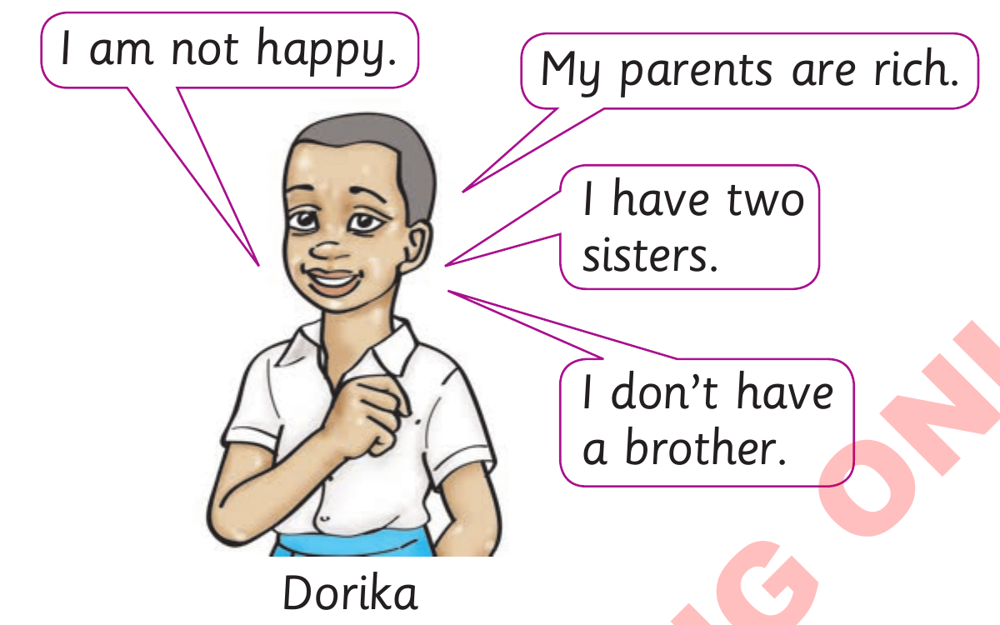

(b) Use but to join the following sentences together.

(i)
My parents are rich. I am not happy.
(ii)
I have two sisters. I don’t have a brother.
(iii)
Her parents are rich. Dorika is not happy.
(iv)
Dorika has two sisters. Dorika does not have a brother.